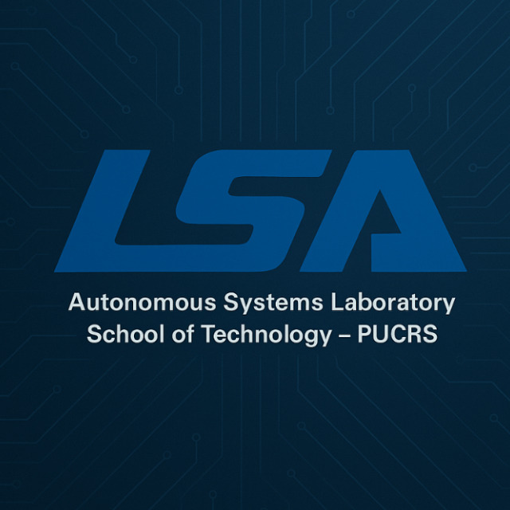

Prof. Anderson
Domingues
Undergraduation
Resources
Contact
Prof. Anderson R. P. Domingues,
Computer Science Ph.D.
Background image: Glen Beck and Betty Snyder program the ENIAC in building 328 at the Ballistic Research Laboratory —
Read more
Linkedin
Publications at DBLP
Google Scholar
Research Gate
Lattes
ORCID
Elsevier Scopus
Github Profile
GAPH on Github
GAPH on Diretório de Grupos de Pesquisa (CNPq)
LSA - Laboratório de Sistemas Autônomos
Undergraduation
Dependable Hardware Systems
2025/2
2025/1
Digital Systems
2025/2
2025/1
Foundations of Computing Systems
2025/2
Algorithms and Data Structures I
2025/2
Resources to thrive the road of computer science
Books and tools for daily academic tasks and reporting
Writing for Computer Science (Zobel)
From Inquiry to Academic Writing: A Text and Reader (Greene)
The Sense of Style: The Thinking Person's Guide to Writing in the 21st Century (Pinker)
Learn LaTeX; this will be your default "text editor" from now on.
Learn Beamer. It is LaTeX but for presentations.
Programming for kids
Python: fasters ifs-and-elses. Learn pip, venv, flake8, black, pylint, and pytest.
VSCode: The "standard" code editor in 2025. Install some plugins and you're ready to go.
GIT: The definitive code management ecossystem. This is a must-learn tool. Period.
Descend into the "ok" programming world
VCPKG: High-level build automation for C++
CMAKE: Not-so-high-level build automation for C++
WxWidgets: Enter graphical user interface (GUI)
Tools for real programmers
The GNU Toolchain: GCC, GDB, AR, and more
Make: low-level build automation
VIM: the only text editor you may ever need once you're a pro.
Godlike programming
Learn about computer architecture, digital systems and operating systems
Create your own programming language and compiler. See
ANTLR
,
YACC
, and
Bison
Create your own operating system (OS). See:
Minix3
and
OSDev
.
 2025/2
2025/2